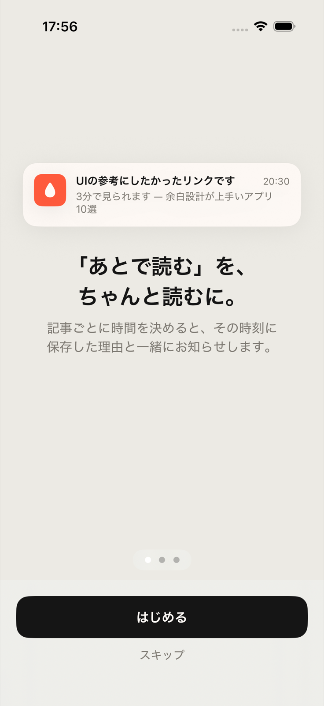
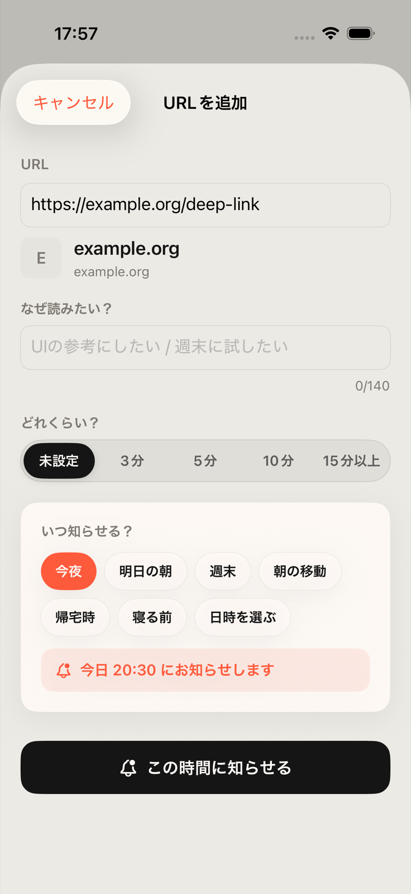

STEP 1
共有から保存
Safariなどの共有メニューから、リンクをすばやく追加できます。

Readrop
リードロップ
READING CAPTURE · 仕事・学習
Webで見つけた記事やリンクをすぐ預け、読みたい日にそっと取り出せる端末内のリーディングボックスです。
Safariなどの共有メニューから、リンクをすばやく追加できます。

通知日時を添えて、保存したまま忘れる状態を減らします。

なぜ読みたいのか、どこに注目したいかを一緒に保存できます。
アカウントを作らず、保存内容を端末内に保ちます。
Designed for